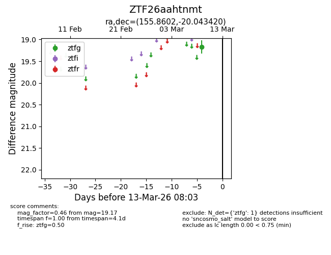
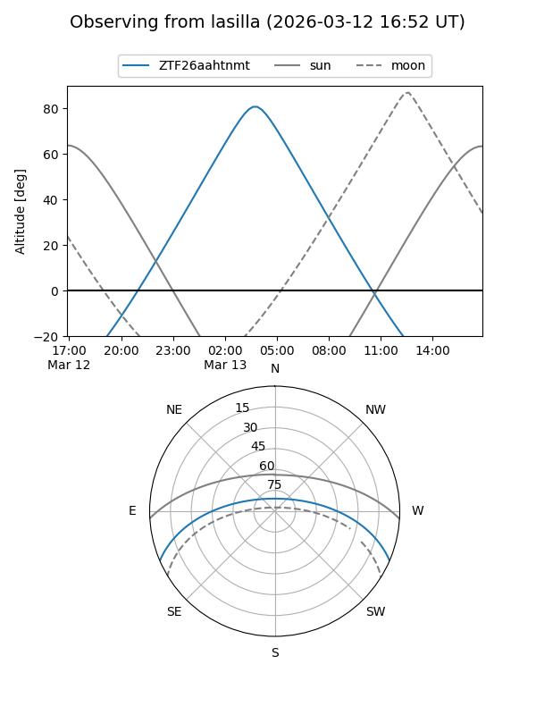
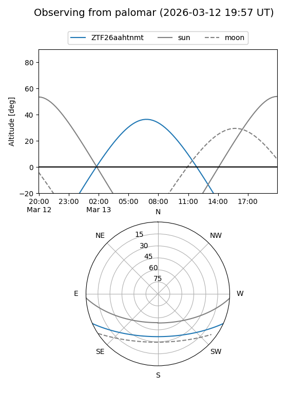

ZTF26aahtnmt
Target ZTF26aahtnmt at 2026-03-13 08:05
Aliases and brokers:
FINK: link
Lasair: link
ALeRCE: link
alt names
ZTF26aahtnmt (ztf,fink_ztf)
Coordinates:
equatorial (ra, dec) = 155.8602,-20.04342
equatorial (HMS+DMS) = 10:23:26.44,-20:02:36.31
galactic (l, b) = (261.7907,+30.76061)
Flags:
Photometry:
last ztfg=19.17
1 ztfg detections
Lightcurve

Visibility


Additional plots